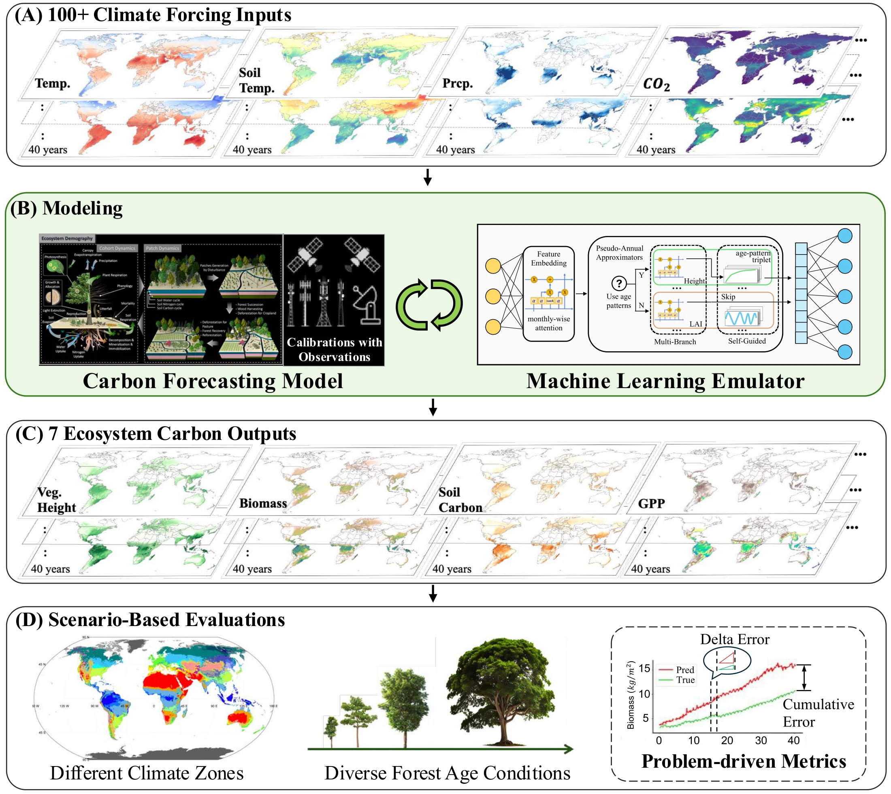

01 / OBSERVE
A world of inputs.
Meteorology, atmospheric CO₂, and soil properties brought onto a consistent global grid.
MERRA-2 · CARBONTRACKER · ROSETTA
Earth’s forests are part of our climate future.
Let’s make their dynamics learnable.
Meet CarbonGlobe, the first global-scale, ML-ready dataset for forecasting forest carbon dynamics.
Machine learning is transforming weather forecasting. Understanding how forests respond to changing conditions is another essential piece of the Earth system.
CarbonGlobe opens that piece to the ML community: decades of ecosystem simulations, harmonized inputs, and reproducible benchmarks in one ready-to-use dataset.
Meteorology, atmospheric CO₂, and soil properties brought onto a consistent global grid.
The process-based Ecosystem Demography model simulates plant growth and the forest carbon cycle.
Learn ecosystem responses from a starting state and environmental drivers. Evaluate over 40 annual steps.
Simulation data, with a scientific foundation. Targets come from the calibrated ED model. They represent modeled ecosystem responses under supplied environmental conditions, rather than direct observations or unconditional predictions.
How it’s built
A forest changes with its location, its age, and its environment. Pick a starting point and trace one possible trajectory through the dataset.
Preparing a small selection from the original CarbonGlobe dataset…
Selected sites and ages illustrate the dataset; they are not regional averages. Annual states use the December slice, following the published benchmark. The globe offers a full-grid smooth view and sampled dots or 3D columns. Small land gaps are interpolated only in the smooth surface.
Data & provenance ↗Long forecasts are hard. Small errors accumulate, and performance shifts across ecosystem variables, climates, and forest ages.
We benchmark eight ML models against ED simulations, using standard errors alongside metrics for annual changes and the final forecast state.
Loading published results…
Published Table 1 · overall test set · models trained with input perturbations. Source data ↗
Better ecosystem emulators could connect advances in weather and climate AI with the slower, complex dynamics of forests.
These are research opportunities opened by the benchmark, rather than demonstrated model integrations.
Build on CarbonGlobeExplore how changing environmental drivers translate into long-term forest carbon responses.
Develop models that account for carbon processes, ecological constraints, and heterogeneous landscapes.
Reduce accumulated error and study performance across forest ages and climate conditions.
The data, the methods, and the code.
Everything you need to take the next step.
CarbonGlobe: A Global-Scale, Multi-Decade Dataset and Benchmark for Carbon Forecasting in Forest Ecosystems
University of Maryland · University of Pittsburgh · Worcester Polytechnic Institute
Advances in Neural Information Processing Systems 38, 2025 ↗